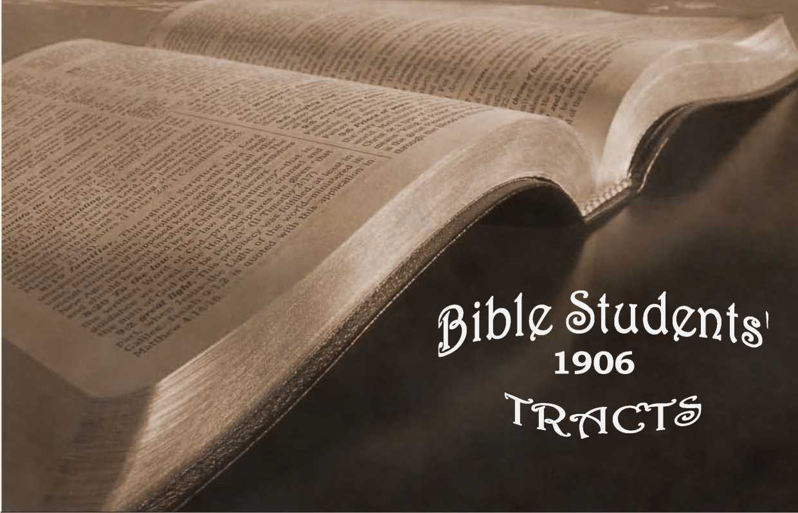

No. 74—Divine Plan of the Ages for Human Salvation
■USBES74
OLD THEOLOGY QUARTERLY.
JULY, 1«U
PRIMARY STUDIES IN THE SCRIPTURES
BNTERBD AT THE POST OFFICE, SIX CENTS
ALLEGHENY, PA,
AS SECOND-CLASS MATTER PER YEAR
THE DIVINE WEAVING
“See the mystic Weaver sitting High in heaven—His loom below. Up and down the treadles go. Takes, for web, the world’s dark ages. Takes, for woof, the kings and sages. Takes the nobles and their pages, Takes all stations and all stages. Thrones are bobbins in His shuttle. Armies make them scud and scuttle— Web into the woof must flow: Up and down the nations go!
At the Weaver’s will they go I
“Calmly see the mystic Weaver Throw His shuttle to and fro; ’Mid the noise and wild confusion, Well the Weaver seems to know What each motion and commotion, What each fusion and ccpfusion, In the grand result will show!
‘‘Glorious wonder! What a weaving, To the dull, beyond believing.
Such no fabled ages know.
Only faith can see the mystery, How, along the aisles of history, . Where the feet of sages go, Loveliest to the fairest eyes, Grand the mystic tapet lies! Soft and smooth, and ever spreading. As if made for angels’ treading—
Tufted circles touching ever. Every figure has its plaidings, Brighter forms and softer shadings, Each illumined—what a riddle!—• From a cross that gems the middle.
** ’Tis a saying—some reject it— That its light is all reflected; That the tapet’s lines are given By a Sun that shines in heaven. 'Tis believed—by all believing— That great God, Himself, is weaving, Bringing out the world’s dark mystery. In the light of faith and history;
And, as web and woof diminish, -Comes the grand and glorious finish, When begin the Golden Ages, Long foretold by seers and sages?*
A recent writer has truly said: “The summary want of the age is that last philosophy into which shall have been sifted al‘ other philosophy, which shall be at once catholic and eclecticl which shall be the joint growth and fruit of reason and faith, and which shall shed forth through every walk of research the blended light of discovery and revelation.”
Many who admit that such a philosophy can emanate from God only, and that the Bible should reveal it, nevertheless fail to find it there, because they do not seek it in an orderly or philosophical manner. Such we advise to read a book of 385 pages entitled “The Plan of the Ages,” which presents the soulsatisfying outlines of the divine plan of human redemption in a form that is acceptable to humble and consecrated reason. Sold by us at cost—cloth bound, 25c, postpaid. This little tract h a crumb of its teachings.
Of this book the Atlanta Constitution said editorially:— -
‘ “ It is impossible to read this book without loving the writer and pondering his wonderful solution of the great mysteries that have troubled us all our lives. There is hardly a family to be found that has not lost some loved one who died outside tha Church—outside the plan of salvation, and, if Calvinism be true, outside of all hope and inside of eternal torment and despair. We smother our feelings and turn away from the horrible picture. We dare not deny the faith of our fathers, and yet can it be possible that the good mother and her wandering child are forever separated?—forever and forever?
°I believe it is the rigidity of these teachings that makes atheists and infidels and skeptics—-makes Christians unhappy and brings their gray hairs down in sorrow to the grave—a lost child, a lost soul! ....
“This wonderful book makes no assertions that are not well sustained by the Scriptures. It is built up stone by stone, and upon every stone is the text, and it becomes a pyramid of God’s love, and mercy, and wisdom. There is nothing in the Bible that the author denies or doubts, but there are many texts upon which he throws a flood of light that dispels many dark and gloomy forebodings. I see that editors of leading journals, and many orthodox ministers of different denominations, have indorsed it and have confessed to this new and comforting light that has dawned upon the interpretation of God’s book. Then let every man read and ponder and take comfort, for we are\all prisoners of hope. This is an age of advanced thought, and more thinking is done than ever before—men dare to think now. Light— more light, is the watchword.”
\ * * *
OUR GOD HAS A PLAN
The careful and reverent student of the sacred Scriptures will find, in the light now due to the household of faith, that the Word of God presents a complete and systematic plan for the salvation and development of the human race, which for ages has been in operation, which, up to the present time, has been a success in its gradual development, and which in due time will be gloriously completed. The past six thousand years of human history have been necessary to work out that plan to its present degree of development, and one thousand years more will witness its full consummation in the res-
titution of every willing member of the race to the original likeness, of God, and their establishment in righteousness, with the eternal ages of glory and blessing before them. .
CHRIST THE CENTER OF THE PLAN
Such is the scope of God’s plan which he formed before the foundation of the world, to be wrought out in Christ, who is the Alpha and Omega, the Beginning and the Ending, the First and the Last of Jehovah’s direct creation—his only begotten Son—Rev. 1:8, io; John 1:14, 18; Col. 1:13. “By him were all things made, and without him was not anything made that was made.” “ He is the image of the invisible .God, the first-born of every creature. By him were all things created that are in heaven and that are in earth, visible and invisible; whether they be thrones or dominions, or principalities or powers; all things were created by him and for him; and he is before all things, and by him all things consist.” (John 1:3; Col. 1:15, 17.) In him also * ‘ we have redemption through his blood, even the forgiveness of sins.”—Col. 1:14.
God, having thus honored his Son by making him his instrument or agent for the accomplishment of all his grand designs, declared to men: “This is my beloved Son in whom I am well pleased; hear ye him.” He “hath exalted him to be a Prince and a Savior,” and “would have all men honor the Son (aS the Father’s agent and representative) even as they honor the Father.” (Matt. 17:5; Acts 5:31; John 5:23.) Nor does the Son.claim higher honor than to be the Father’s agent and messenger, “the messenger of the (Jehovah’s) covenant” (Mal. 3:1); for he says, “ I came not to do mine own will, but the will of him that sent me,” and “My Father is greater than I.” (John 6:38; 5:30; 4:34; 14:28.) To us, as to the Apostle, “there is one God, the Father, 0/ whom are all things; and one Lord, Jesus Christ, by whom are all things; and we by him.”—1 Cor. 8:6. *
MAN IN. GOD’S IMAGE
After the creation of angels came the creation of man, a being adapted to live on the earth and to be its lord and king. Man, as well as the angels, was created in the divine image—that is, with faculties of reason, conscience, etc., capable of discerning right and wrong. Man, as king of earth, and perfect, as created, was only “a little lower than the angels” (Heb. 2:7, 9), and that little consisted in his being limited by his nature to the earth, while the angelic nature, being spiritual, has a wider range for observation and hence a broader plane for reasoning. To be an image of God implies freedom of choice or will with respect to one’s own conduct. With such freedom man was originally endowed by his Creator, and the alternatives of good and evil were placed before him as a necessity to his trial for lasting life, though not without warning on God’s part as to the blessed results of righteousness and the baneful results of evil. On ac
count of man’s inexperience, implicit obedience io God’s will was required of him for his safety and protection, as well as for a test of his loyalty to his rightful Lord and Sovereign. Nevertheless, God, by divine intuition, foresaw the course that Adam would take and the fall of the whole race with him into death, and also the lessons which that experience with sin and death might be overruled to teach them when, in due time, through the merit of Christ’s sacrifice, he would grant them remission of sins upon their repentance and turn to righteousness. He therefore determined to let man take his chosen course, and to inflict on him its just penalty, and then in due time to deliver him from it with a great salvation.
god’s FOREKNOWLEDGE GUIDED
God foresaw that, even with good intentions, man’s limited knowledge and experience would continually offer temptations to doubt the wisdom of divine arrangements, if not to disobey them; he therefore' embraced this opportunity to convey to all of his creatures, as well as to man, a fuller conception of himself, in order that they might the more fully and heartily worship and obey him. As a revelation and illustration of his attributes— Justice, Wisdom, Power and Love—God placed his human son in his own image —perfect though inexperienced, and but slightly informed respecting his Creator’s attributes—on trial, in order that ~ he might gain a valuable experience, yet foreknowing that, although in every respect fairly tried, he would, in the use of his own free will, fall into sin. But God did not purpose to abandon his disobedient and death-deserving creature to eternal ruin, but provided a way of redemption whereby he might be just and yet the justifier of the truly penitent and believing (Rom. 3:26), so that the painful experience gained under the reign of sin and death might eventually, under this overruling influence of divine providence, serve the more firmly to establish them in righteousness and willing loyalty to God.
The trial in Eden was merely a test of obedience, or loyalty to\God. The fruit of the forbidden tree was good (forall the trees of the garden were good) and was desirable to make one wise; and had they proved their loyalty to God by obedience, probably the restriction would in due time have been removed. Knowledge is a blessing only to those who are subject to the divine will. This, God had arranged that man should acquire by experience, and angels by example. The penalty of man’s . disobedience was death—‘ ‘ In the day that thou eatest thereof, dying thou shalt die.” The penalty was fulfilled to the letter: the dying began as soon as the penalty was pronounced, when they were cast out of Eden and restrained from eating its life-sustaining fruits; and it was completed within the thousand-year day, as predicted. (2 Pet. 3:8.) The penalty, death, being gradually and not sud-
denly inflicted left the condemned, pair free to propagate their species, yet subject to the weakness and all the penalty under which they themselves groaned.
THE FALL OF MAN
Thus, by one man’s disobedience, sin entered into the world, and death by (as a result of) sin; and thus death passed upon all men, because all are sinners and imperfect by heredity.—Rom. 5:12.
Sin, and death its penalty, by thus gaining control of Adam, controlled the world, and reigned from Adam to Moses—with but few divine promises, even, to illuminate the dark way. Then “the law came by Moses,” offering lasting life to any one who would observe it in every particular. But in their fallen condition none of the condemned race was able to obey it, and by it to gain the reward of life. As God had designed, however, the law did serve a purpose: it served to show the helplessness of man for his own justification; and ' it served to point out, as from another than the corrupt and condemned seed of Adam, the holy, harmless undefiled Lamb of God, whose sacrifice, as Adam’s substitute or Redeemer, satisfied the claims of justice, bought the world from the slavery of sin and death, and made possible the gospel offer of forgiveness and lasting life, not through our righteousness in keeping God’s law (which is impossible by reason of the weakness of the flesh), but by our acceptance of Christ as our Master, and of his ransom-sacrifice as the satisfaction for our sins before God.
■ > DIVINE TIMES AND SEASONS
It might be supposed that the work of blessing the world should have begun at once when the sacrifice for sin was accepted by the Father, as signified by the giving of the spirit of adoption at Pentecost; but not so. Another feature of the divine plan had first to be accomplished, viz.: the selection and development of the Church to be joint heirs with Christ in his glory and kingdom and work of blessing the world. This was from the beginning a part of the divine plan; and therefore the glorious reign and work of blessing the world could not begin at Christ’s resurrectioil, nor at . Pentecost, but had to be delayed until the selection of all its tried and faithful members could be accomplished. Or, to state it otherwise, the Father’s appointed time for blessing the world is during the seventh thousand year, and had it not been for his purpose to select the Church, the “bride” or “body" of Christ, to share with him in the work of blessing the race, there need not have been two advents of our Lord. One would have been sufficient; for he could have come now, in the end of the sixth thousand years, could have redeemed all and at once begun the great work of blessing and restoring mankind. He came to redeem the world . eighteen centuries previous to the appointed time of
Messing, so as to leave time, before that day, for
the selection of his bride from among the redeemed race. ,
As the occasion of man’s fall became God’s opportunity for exhibiting to all his creatures his wonderful character from every standpoint—his Justice, his Wisdom, his Power and his Love—so it also became an opportunity for the testing in all points »f his only begotten Son, preparatory to his yet higher exaltation (Phil. 2:8-10) to the divine nature, with all which that implies of glory, honor and immortality, and of position next to the Father, that all men should honor the Son even as they honor the Father. And the same occasion, as pre-arranged of God, also makes possible the calling, selection and trial of the Gospel Church, now soon to be completed and made joint-inheri-tors,'with our Lord and Savior, of glory, honor and immortality, and like him to be exalted far above men and angels, even to the divine nature—• 2 Pet. 1:14.
REVEALING DIVINE CHARACTER
Only the justice of God’s character has yet been made manifest to the world, and much of its glory is sadly beclouded by human tradition, which falsely declares the wages of sin to be eternal torment instead of "everlasting destruction.” God’s love for his creatures, the wisdom of his plan of salvation, and his power to save, are as yet but partially revealed, and even distortedly seen by but few indeed. God’s justica has been revealed to aU for the past six thousand years in the reign of death, the penalty which he prescribed for sin. God's love began to be revealed eighteen hundred years agoj, but not seeing all of the plan, few rightly appreciatied the love. Nevertheless "In this was manifested the love of God toward us, because that God sent! his only begotten Son into the world that we might live through him.” (1 John 4:9.) The wisdom pi the Lord’s plan will not be appreciated until thd Millennial Sun of Righteousness has arisen, revealing those features of his plan which then win bring blessings to all the billions which his justice condemned, and which his love redeemed. Bui the power of God will not be seen in its fulness until well on in that Millennial Day. Although partially revealed in the work of creation, the grandest and fullest exhibition remains to be shown in the resurrection from death of those redeemed ones, who, accepting of the gracious provisions of his love, bow in glad submission to all his just requirements.
It is a mistake made by many to suppose that Jehovah s justice and his love are ever in conflict with each other. Both are perfect—his love never desires or attempts what his justice does not endorse: his justice and his love must both approve every act for which his power is exercised. With men, because of lack of wisdom and power, love and justice often conflict. Man’s love often has gracious designs which he has not the wisdom or power to accomplish except by violating justice. We must guage our views by the infinite and stay close to the revelation he makes of his plans, not seeking to make plans of our own for God. God’s plan, when clearly seen, fully vindicates his justice as well as his love. The plan of redemption devised by divine wisdom is the essence of unfathomable love based upon uncompromising justice, and will be fully accomplished by divine power. The first act of God’s love was to provide a ransom for Adam, and thus for all his race, since it was by his transgression that all fell into sin and death. Until the ransom was given nothing was done in the way of saving the world: promises and types of coming salvation were made, but nothing more could be done. God had rendered a just sentence, and the penalty could not be set aside: it had to be met. Before Adam and his family could be released from the death sentence by a resurrection, the life of another man not under the sentence had to be paid as its corresponding price, that God might be just in justifying and accepting back to harmony and life all who believe in Jesus and turn unto God in his name. (Acts 4:12.) And having accepted Christ as the ransom of all such, the Apostle assures us that now “he is faithful and just to forgive us ovr sins and to cleanse us from all unrighteousness.’* —1 John 1 :g.
RECONCILIATION FOR BELIEVERS
Thus we see, from God’s own declaration, that since Christ died for our sins, the just for the unjust, that he might bring us to God, or rather, since he ascended up on high, and there appearing in the presence of God on our behalf presented the price of our redemption and became Lord of all, of both the living and the dead, there is no longer any legal hindrance in the way of the return of all mankind to fellowship with God, and to all the blessings and privileges lost under the penalty of the first transgression. The only difficulties remaining are on man’s part. In his fallen condition his mind is sick as well as his body. He inclines to believe falsely and is disinclined to believe in so great a salvation, such “good tidings of great joy which shall be unto all people.’’ Besides, he is weak through the fall, and does those things which he often does not at heart approve and leaves undone much that at heart he really desires to do, and there is no help in himself. Some assistance fn overcoming sinward tendencies must reach him or else the cancellation of past sin and the opportunity for reconciliation will be a valueless offer. \
THE CHURCH IN GLORY \
This necessity, which we recognize, is fully met/' In those features of the divine plan which are yet to be fulfilled. He who redeemed all is appointed to be both king and judge of all; for God “hath appointed a day in which he will judge the world in righteousness by that Man whom he hath ordained,” Jesus Christ. (Acts 17:31.)' That is, he will righteously grant the world a new, individual trial for eternal life, having cancelled the sentence of the first trial by the propitiatory sacrifice of hli Son.
And the redeemed, tried and glorified Church, the faithful bride of Christ, is to share with her Lord in this great work, as kings and priests and judges. (Rev. 5:10; 1 Cor. 6:2, 3.) As kings they will rule the world in righteousness, enforcing and establishing order and justice and truth; as priests they will teach the people, and’ through the merit of the one sacrifice for sins forgive the penitent, and cleanse and help them out of their weaknesses —mental, moral and physical; as judges they wil judge of the measure of the guilt of all in respect to their course in the future as well as in their past lives, judging net by the hearing of the ear, nor by the sight of the eye, but by an infallible judgment for which they will be abundantly qualified by their exaltation to the divine nature. .
While the promise of God to the Church is a change of nature from human to divine, to be effected at the second advent of her Lord, as the completion of his resurrection—the first resurrection (2 Peter 1:4; 1 Cor. 15:50-53; Phil. 3:10111 Rev. 20:6)—the provision of God’s plans for the world at large is quite different, viz.: a “restitution" or restoration to all the grand qualities and powers of the human nature (ah earthly likeness of the divine), now so sadly blurred and defaced by the six thousand years of slavery to sin and death. •
THE WORLD’S BLESSING
Rightly to appreciate human restitution, it must be remembered that every excellent quality exhibited among men is but an imperfect exhibitfcm of what belongs to each perfect man, whether it be logical acuteness, mathematical precision, aesthetic taste, art, wit, eloquence, poetic imagination, music or any other intellectual grace or moral refinement} and that these,’ to a higher degree than we have ever seen them exhibited by any fallen men, will, in the process of restitution, ■■ become, as at, first designed by the Creator, the endowments of each obedient member of the human family. With the restitution of perfect mental'and moral balance to man, the'original king of earth, will come also a blessing through man to all his subjects—the beasts of the field, the fowl of heaven, and the fish of the sea (Psa. 8 :6, 8); and the ordering of the earth itself is likewise promised.
The “times of restitution of all things which God hath spoken by the mouth of all his holy prophets since the world began” (Acts 3:19-21) are, we believe the Scriptures to teach, just at the door. Soon the last members of the body of Christ will have finished their course, and then, with their glorious Head and all the other members of ths body, they will shine forth as the sun for the blessing of the entire redeemed race.
~ TOWER BIBLE & TRACT SOCIETY, Bible House, Arch Street, *
Allegheny, Pa., U. S. A.
THE HARMONIOUS CO-OPERATION OF THE CREATOR'S WISDOM, JUSTICE, LOVE AND POWER WITNESSED THEREBY
Evil is that which produces unhappiness; anything which either directly or remotely causes suffering of any kind.— Webster. This subject, therefore, not only inquires regarding human ailments, sorrows, pains, weaknesses and death, but goes back of all these to consider their primary cause—sin—and its remedy, Since sin is the cause of evil, its removal is the only method of permanently curing the malady.
No difficulty, perhaps, more frequently preBents itself to the inquiring mind than the questions, Why did God permit the present reign of evil? Why did he permit Satan to present the temptation to our first parents, after having created them perfect and upright? Or why did he allow the forbidden tree to have a place among the good? Despite all attempts to turn it aside, the question will obtrude itself—Could not God have prevented all possibility of man’s fall?
The difficulty undoubtedly arises from a failure to comprehend the plan of God. God could have prevented the entrance of sin, but the fact that he did not should be sufficient proof to us that its present permission is designed ultimately to work out some greater good. God’s plans, seen in their completeness, will prove the wisdom of the course pursued. Some inquire, Could not God, with whom all things are possible, have interfered in season to prevent the full accomplishment of Satan’s design? Doubtless he could; but such' interference would have prevented the accomplishment of his own purposes. His purpose was to make manifest the perfection, majesty and righteous authority of his law, and to prove both to men and to angels the evil consequences resulting from its violation. Besides, in their very nature, some things are impossible even with God, as the Scriptures state. It is "impossible for God to lie” (Heb.6:i8). "He cannot deny himself’ (2 Tim. 2:13). He cannot do wrong, and therefore he could not choose any but the wisest and best plan for introducing his creatures into life, even though our short-sighted vision might for a time fail to discern the hidden springs of infinite wisdom.
The Scriptures declare that all things were created for the Lord’s pleasure (Rom. 4:11) — without doubt, for the pleasure of dispensing his blessings, and of exercising the atttributes of his glorious being. And though, in the working out of his benevolent designs, he permits evil and evil doers for a time to play an active part, yet it is not for evil’s sake, nor because he is in league with sin; for he declares that he is " not a God that hath pleasure in wickedness.” (Psa. 5:4.) Though opposed to evil in every sense, God permits (i. e., does not hinder) it for a time, because his wisdom sees a way in which it may be made a lasting and valuable lesson to his creatures.
ft is a self-evident truth that for every right principle there is a corresponding wrong principle;, as, for instance, truth and falsity, love and hatred, justice and injustice. We distinguish these opposite principles as right and wrong, by their effects wheh put in action. That principle the result of which, when active, is beneficial and productive of ultimate order, harmony and happiness, we call a right principle; and the opposite, which is productive of discord, unhappiness and destruction, we call a wrong principle. The results of these principles in action we call good and evil; and the intelligent being, capable of discerning the right principle from the wrong, and voluntarily governed by the one or the other, we call virtuous or sinful.
This faculty of discerning between right and wrong principles is called the moral sense, or conscience. It is by this moral sense which God has given to man that we are able to judge of God and to recognize that he is good. It is to this moral sense that God always appeals to prove his righteousness or justice; and by the same moral sense Adam could discern sin, or unrighteousness, to be evil, even before he knew all its consequences. The lower orders of God’s creatures are not endowed with this moral sense. A dog has some intelligence, but not to this degree, though he may learn that certain actions bring the approval and reward of his master, and certain others his disapproval. He might steal or take life, but would not be termed a sinner; or he might protect property and life, but would not be called virtuous— because he is ignorant of the moral quality of his actions.
God could have made mankind devoid at ability to discern between right and wrong, or able only to discern and to do right; but to have made him so would have been to make merely a living machine, and certainly not a mental image of his Creator. Or he might have made man perfect and a free agent, as he did, and have guarded him from Satan’s temptation. In that case, man’s experience being limited to good, he would havej been continually liable to suggestions of evil from without, or to ambitions from within, which would have made the everlasting future uncertain, and an outbreak of disobedience and disorder might always have been a possibility, besides which, good would never have been so highly appreciated except by its contrast with evil.
God first made his creatures acquainted with good, surrounding them with it in Eden; and afterward, as a penalty for disobedience, he gave them a severe knowledge of evil. Expelled from Eden and deprived of fellowship with himself, God let them experience sickness, pain and death, that they might thus forever know evil and the inexpediency and exceeding sinfulness of sin.
By a comparison of results they came to an appreciation and proper estimate of both; "And the Lord said, Behold, the man is become as one of us, to know good and evil.” (Gen. 3:22.) In this their posterity share, except that they first obtain their knowledge of evil, and cannot fully realize what good is until they experience it in the Millennium, as a result of their redemption by him who will then be their Judge and King.
The moral sense, or judgment of right and
wrong-, and the liberty to use it, which Adam possessed, were important features of his likeness to God. The law of right and wrong was written in his natural constitution. It was a part of his nature, just as it is a part of the divine nature. But let us not forget that this image or likeness of God, this originally law inscribed nature of man, has lost much of its clear outline through the srasing, degrading influence of sin; hence it is not now what it was in the first man. Ability to love implies ability to hate; hence we may reason that the Creator could not make man in his own likeness, with power to love and to do right, without the corresponding ability to hate and to do wrong. .This liberty of choice, termed free moral agency, or free will, is a part of man’s original endowment; and this, together with the full measure of his mental and moral faculties, constituted him an image of his Creator. Today, after six thousand years of degradation, so much of the original likeness has been erased by sin that we are not free, being bound, to a greater or less extent, by sin and its entailments, so that sin is now more easy and therefore more agreeable to the fallen race than is righteousness. $*1 >
That God could have given Adam such a vivid impression of the many evil results of sin as would have deterred him from it, we need not question, but we believe that God foresaw, that an actual experience of the evil would be the surest and .most lasting lesson to serve man eternally; and for that reason God did not prevent put permitted man to take his choice, and to feel the consequences of evil. Had opportunity to sin never been permitted, man could not have resisted it, consequently there would have been neither virtue nor merit in his right doing. God seeketh such to worship him as worship in spirit and in truth. He desires intelligent and willing obedience, rather than ignorant, mechanical service. He already had in operation inanimate mechanical agencies accomplishing his will, but his design was to make a nobler thing, an intelligent creature in his own likeness, a lord for earth, whose loyalty and righteousness would be based upon an appreciation of right and wrong, of good and evil. <he principles of right and wrong, as principles, have always existed, and must always exist; and all perfect, intelligent creatures in God’s likeness must be free to choose either, though the right principle only will forever continue to be active. The Scriptures inform us that when the activity of the evil principle has been permitted long enough to accomplish God's purpose, it will forever cease to be active, and that all who continue to submit to its control shall forever cease to exist. (i Cor. 15:25, 26; Heb.2:i4.) Right-doing and right-doers, only, shall continue forever.
But the question recurs in another form: Could not man have been made acquainted with evil in some other way than by experience ? There are four ways of knowing things, namely, by intuition, by observation, by experience, and by information received through sources accepted as positively truthful. An intuitive knowledge would be a^flirect apprehension, without the process of reasoning, or the necessity for proof. Such knowledge belongs only to the^divine Jehovah, the
eternal fountain of all wisdom and truth, who, of necessity and in the very nature of things, is superior to all his creatures. Therefore, man’s knowledge of good and evil could not be intuitive, Man’s knowledge might have come by observation, but in that event there must needs have been some exhibition of evil and its results for man to observe. This would imply the permission of evil somewhere, among some beings, and why not as well among men, and upon the earth, as among others.elsewhere? .
Why should not man be the illustration, and get his knowledge by practical experience? It is so: man is gaining a practical experience, and is furnishing an illustration to others as well, being "made a spectacle to angels.” s
The severity of the penalty was not a display of hatred and malice on God’s part, but the necessary and inevitable, final result of evil, which God thus allowed man to see and feel. God can sustain life as long as he sees fit, even against the destructive power of actual evil; but it would be as impossible for God to sustain such a life everlastingly, as it is for God to lie. That is, it is morally impossible. Such a life could only become more and more a source of unhappiness to itself and others; therefore, God is too good to sustain an existence so useless and injurious to itself and others, and, his sustaining power being withdrawn, destruction, the natural result of evil, would ensue. Life is a favor, a gift of God, and it will be continued everlastingly only to the obedient. ’
No injustice has been done to Adam’s posterity in not affording them each an individual trial. Jehovah was in no sense bound to bring us into existence ; and, having brought us into being, no law of equity or justice binds him to perpetuate our being everlastingly, nor even to grant us a trial under promise of everlasting life if obedient. Mark this point well: The present life, which from the cradle to the tomb is but a process of dying, is, notwithstanding all its evils and disappointments, a boon, a favor, even if there were no hereafter. .iThe large majority so esteem it, the exceptions (suicides) being comparatively few; and these our courts of justice have repeatedly decided to be mentally unbalanced, as otherwise they would not thus cut themselves off from present blessings. Besides, the conduct of the perfect man, Adam, shows us what the conduct of his children would have been under similar circumstances. ( . F
Many have imbibed the erroneous idea that God placed our race on trial for life with the alternative of eternal torture, whereas nothing of the kind is even hinted at in the penalty. The favor or blessing of God to his obedient children is life— continuous life—free from pain, sickness and every other element of decay and death. Adam was given this blessing in the full measure, but warned that he would be deprived of this "gift” if he failed to render obedience to God—"In the day that thou eatest thereof, dying, thou shalt die.” He knew nothing of a life in torment as the penalty of sin. 'Life everlasting is nowhere promised to any but the obedient. Life is God’s gift, and
Those who do not receive a full knowledge and, by faith, an enjoyment of this favor of God in the present time (and such are the great majority, including children and heathen) will assuredly have these privileges in the next age, or "world to come,” the dispensation or age to follow the present. To this end, "all that are in their graves . . . shall come forth.” As each one (whether in this age or the next) becomes fully aware of the ransom-price given by our Lord Jesus, and of his subsequent privileges, he is considered as on trial, as Adam was; and obedience brings lasting life, and disobedience ~ lasting death—the "second death.” Perfect obedience, however, without perfect ability <0 render it, is not required of any. Under the New Covenant the members of the Church during the Gospel age, have had the righteousness of Christ imputed to them by faith, to make up their unavoidable deficiencies through the weaknesses of the flesh ; and this same grace will operate toward "whosoever will” of the world during the Millennial age. Not until physical perfection is reached (which will be the privilege of all before the close of the Millennial age) will absolute moral perfection be expected. This new trial, the result of the ransom and the New Covenant, will differ from the trial in Eden, in that in it the acts of each one will affect only his own future. 1 *
But would not this be giving some of the race a second chance to gain everlasting life? W« answer—The first chance for ev rlasting life was lost for himself and all of his race, "yet in his loins,” by father Adam’s disobedience. Under that original trial "condemnation passed upon all men;” and God’s plan -. as that through Christ’s redemption-sacrifice Adam, and all who lost life in his failure, hould, after having tasted of the exceeding .infulness of sin and felt the weight of sin’s penalty, be given the opportunity to turn unto God through faith in the Redeemer. If anyone choose to call this a "second .hance,” let him do so: itmust certainly be Adam's ~econd chance, and in a sense at least it is the same for all of the ’redeemed race, but it will be the first individual opportunity of his descendants, who, when born, were already under condemnation to death. «Call it what we please, the facts are the same; viz., All were sentenced to death because of Adam’s disobedience, and all will enjoy (in this life or the next) a full opportunity to gain everlasting life under the favorable terms of the New Covenant. This, as the angels declared, is "Good tidings of great joy which shall be unto all people.” And, as the Apostle declared, this grace of God—that our Lord Jesus "gave himself a ransom for all,"— must be "testified” to all "in due time.” (Rom. S:I7'r9; 1 Tim. 2:4-6.) Men, not God, have limited to the Gospel age this chance or opportunity of attaining life. God, on the contrary, tells us that the Gospel age is merely for the selection of the Church, the royal priesthood, through whom, during a succeeding age, all others shall be brought to an accurate knowledge of the Truth and granted full opportunity to secure everlasting life under the New Covenant. J 5
But what advantage is there in the method pur-
death, the opposite of life, is the penalty he prescribes.
Eternal torture is nowhere suggested in the Old Testament Scriptures, and only a few statements in the New Testament can be so misconstrued as to appear to teach it: and these are found either among the symbolisms of Revelation, or among the parables and dark sayings of our Lord, which were not understood, by the people who heard them (Luke 8:io), and which seem to be but little better comprehended today.* "The wages of sin is death.” (Rom. 6:23.) "The soul that sinneth, it shall die.”—Ezek. 18:4.
♦Many have supposed God unjust in allowing Adam’s condemnation to be shared Lydiis posterity, instead of granting each one a trial and chance for everlasting life similar to that which Adam enjoyed. But what will such say if it now be shown that the world’s opportunity and trial for life will be much more favorable than was Adam’s; and that, too, because God adopted this plan of permitting Adam’s race to share his penalty in a natural way ? We believe this to be the case, and will endeavor to make it plain.
God assures us that as condemnation passed upon all in Adam, so he has arranged for a new head, father or life-giver for the race, into whom all may be transferred by faith ; and that as all in Adam shared the curse of death, so all in Christ will share the blessing of life, being justified by faith in his blood. (Rom. 5:12, 18, 19.) Thus seen, the death of Jesus, the undefiled, the sinless one, was a complete settlement toward God of the sin of Adam. As one man had sinned, and all in him had shared his curse, his penalty, so Jesus, having paid the penalty of that one sinner, bought not only Adam but all of his posterity,— all men—who by heredity shared his weaknesses and sins and the penalty of these,—death. Our Lord, "the man Christ Jesus,” himself unblemished, approved, and with a perfect seed or race in him, unborn, likewise untainted with sin, gave his all of human life and title as the full ransomprice for Adam and the race or seed in him when sentenced. Having thus fully purchased the lives of Adam and his race, Christ offers to adopt as his seed, his children, all of Adam’s race who will accept the terms of his New Covenant and thus £y faith come into his family—the family of God—and receive everlasting life. Thus the Redeemer will " see his seed [as many of Adam’s seed as will accept adoption, upon his conditions] and prolong his days [resurrection to a higher than human plane, being granted him by the Father as a reward for his obedience],” and all in the most unlikely way : by the sacrifice of life and posterity. And thus it is written : "As all in Adam die, even so all in Christ shall be made alive.”—Corrected translation, I Cor. 15:22.
The injury we received through Adam’s fall (we suffered no injustice) is, by God’s favor to be more than offset with favor through Christ; and all will sooner or later (in God’s "duetime”) have a full opportunity to be restored to the same standing that Adam enjoyed before he sinned.
♦We will supply for ten cents & pamphlet explaining every passage of Scripture in which the word "hell” occurs.
sued? Why not give all men an individual chance——destruction—cutting off from life. God thus lint-
for life now, at once, without the long process of Adam’s trial and condemnation, the share by his offspring in his condemnation, the redemption of aH 4>y Christ’s sacrifice, and the new offer to all of everlasting life upon the New Covenant conditions? If evil must be permitted because of man’s free moral agency, why is its extermination accomplished by such a peculiar and circuitous method? Why allow so much misery to intervene, and to come upon many who will ultimately receive the gift of life as obedient children of God?
Ah! that is the point on which interest in this subject centers. Had God ordered differently the propagation of our species, so that children would not partake of the results of parental sins—weaknesses, mental, moral and physical—and had the Creator so arranged that all should have a favorable Edenic condition for their testing, and that transgressors only should be condemned and "cut off,” how many might we presume would, under all those favorable conditions, be found worthy, and how many unworthy of life? *
If the one instance of Adam be taken as a criterion (and he certainly was in every respect a sample of perfect manhood), the conclusion would b® that none would have been found perfectly obedient and worthy; because none would possess . that clear knowledge of and experience with God, which would develop in them full confidence in his, laws, beyond their personal judgment. We are assured that it was Christ’s knowledge of the Father that enabled him to trust and obey implicitly. (Isa. 53:11.) But let us suppose that onefourth would gain life; or even more, suppose that one-half were found worthy, and that the other half would suffer the wages of sin,—death. Then what? Let us suppose the other half, the obedient, had neither experienced nor witnessed sin: might they not forever feel a curiosity toward things forbidden, only restrained through fear of God and of the penalty? Their service could not be so hearty as though they knew good and evil; and hence had a full appreciation of the benevolent designs of the Creator in making the laws which govern his own course as well as the course of his creatures. t
9 Then, too, consider the half that would thus go into death as the result of their own wilful sin. They would be lastingly cut off from life, and their only hope would be that God would in love remember them as his creatures, the work of his hands, and provide another trial for them. But why do so? The only reason would be a hope that if they were re-awakened and tried again, some of them, by reason of their larger experience, might then choose obedience and live.
But even if such a plan were as good in its results as the one God has adopted, there would be serious objections to it.
How much more like the wisdom of God to confine sin to certain limits, as his plan does. How much better even our finite minds can discern it to be, to have but one perfect and impartial law, which declares the wages of wilful sin to be death
its the evil which he permits, by providing that the Millennial reign of Christ shall accomplish the full extinction of evil and also of wilful evildoers, and usher in an eternity of righteousness, based upon full knowledge and perfect free-will obedience by perfect beings. j
Those who can appreciate this feature of God’s plan, which, by condemning all in one representative, opened the way for the ransom and restitution of all by one Redeemer, will find in it the solution of many perplexities. They will see that the condemnation of all in one was the reverse of an injury: it was a great favor to all when taken in connection with God’s plan for providing justification for all through another one’s sacrifice. Evil will be forever extinguished when God’s purpose in permitting it shall have been accomplished, and when the benefits of the ransom are made co-extensive with the penalty of sin/ It is impossible, however, to appreciate rightly this feature of the plan of God without a full recognition of the sinfulness of sin, the nature of its penalty—death, the importance and value of the ransom which our Lord Jesus gave, and the positive and complete restoration of the individual to favorable conditions, conditions under which he will have full and ample trial, before being adjudged worthy of the reward (lasting life), or of the penalty (lasting death).
In view of the great plan of redemption, and the consequent "restitution of all things,” through Christ, we can see that blessings result through the permission of evil which, probably, could not otherwise have been so fully realized. »
Not only are men benefitted to all eternity by the experience gained, and angels by their observation of man’s experiences, but all are further advantaged by a fuller acquaintance with God's character as manifested in his plan. When his plan is fully accomplished, all will be able to read clearly his wisdom, justice, love and power. They will see the justice which could not violate the divine decree, nor save the justly condemned race without a full cancellation of their penalty by a willing Redeemer. They will see the love which provided this noble sacrifice and which highly exalted the Redeemer to God’s own right hand, giving him power and authority thereby to restore to life those whom he had purchased witlr his precious blood. They will also see the power and wisdom which were able to work out a glorious destiny for his creatures, and so to overrule every opposing influence as to make them either the willing or the unwilling agents for the advancement and final accomplishment of his grand designs. Had evil not been permitted and thus overruled by divine providence, we cannot see how these results could have been attained. The permission of evil for a time among men thus displays a far-seeing wisdom, which grasped all the attendant circumstances, devised the remedy, and marked the final outcome through his power and grace.
/ WATCH TOWER BIBLE & TRACT SOCIETY,
■SANCHES:—V’ —DON, N.W. ELBERFELD COPENHAGEN
STOCKHOLM
ALLEGHENY, PA., U. S. A. ,
YVERDON-SUISSE MELBOUBJCI